Hi! I'm Jucheng (Jack) Shen, a senior at Rice University majoring in Computer Science, Mathematics, and Economics. I'm interested in robotics, reinforcement learning, and diffusion models. So far, my work has focused on making generative models efficient and understanding how they work, and I want to extend this to world models that help robots predict, act, and adapt. I'm applying to PhD programs for Fall 2027.
I'm working with Jiachen Yao and Robert Joseph under Prof. Anima Anandkumar at Caltech.
Previously, I collaborated with Barbara Su under Prof. Anastasios Kyrillidis at Rice, worked with Boya Zeng under Prof. Zhuang Liu at Princeton, with Yeonju Ro under Prof. Atlas Wang at UT Austin, with Dr. Souvik Kundu at Intel Labs, and with Fanjiang Ye under Prof. Yuke Wang at Rice.
Publications * equal contribution




i1: A Simple and Fully Open Recipe for Strong Text-to-Image Models
NeurIPS 2026 BeNTo Workshop | paper | code | data | project page

HyperGen: Empowering Ultra-high-resolution Video Generation Framework with Sketch-Tile Collaboration
PPoPP 2027 | paper